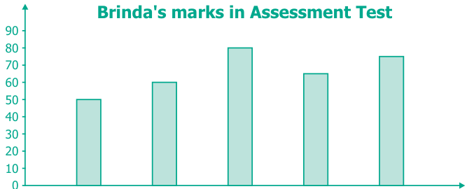
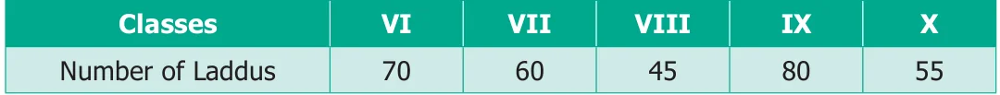
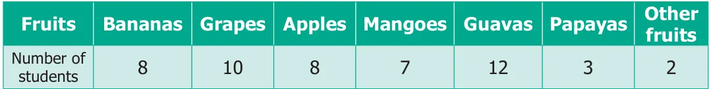
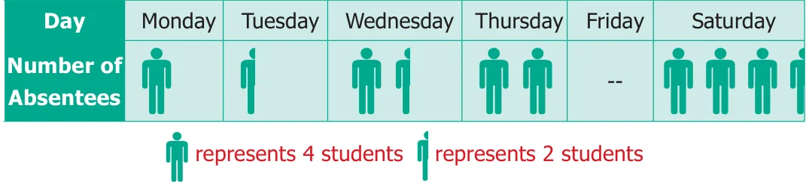

- Read the given Bar Graph which shows the percentage of marks obtained by Brinda in different subjects in an assessment test.

Language English Mathematics Science Social Science
Subjects
Observe the Bar Graph and answer the following questions.
- 1 Unit = __________ % of marks on vertical line.
- Brinda has scored maximum marks in __________ subject.
- Brinda has scored minimum marks in __________ subject.
- The percentage of marks scored by Brinda in Science is __________.
- Brinda scored 60% marks in the subject __________.
- Brinda scored 20% more in __________ subject than __________ subject.
- Chitra has to buy Laddus in order to distribute to her friends as follows:

Draw a Bar Graph for this data.
- The fruits liked by the students of a class are as follows. Draw a Bar Graph for this data.

- The pictograph given below shows the number of absentees on different days of the week in class six. Draw the Bar graph for the same.

Objective Type Questions
- A bar graph can be drawn using __________.
- Horizontal bars only
- Vertical bars only
- Both horizontal bars and vertical bars
- Either horizontal bars or vertical bars.
- The spaces between any two bars in a bar graph __________.
(a) can be different (b) are the same - are not the same (d) all of these

Miscellaneous Practice Problems
- The heights (in centimeters) of 40 children are. 110 112 112 116 119 111 113 115 118 120 110 113 114 111 114 113 110 120 118 115 112 110 116 111 115 120 113 111 113 120 115 111 116 112 110 111 120 111 120 111 Prepare a tally marks table.
- The following pictograph shows the total savings of a group of friends in a year.
Each picture represents a saving of Rs.100. Answer the following questions.